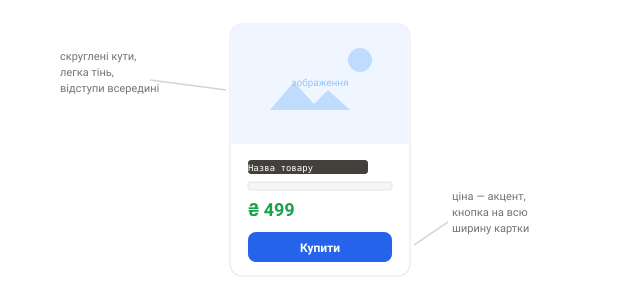

Практика: Tailwind CSS
Створи HTML-файл і підключи Tailwind через CDN (<script src="https://cdn.jsdelivr.net/npm/@tailwindcss/browser@4"></script>)
або відкрий play.tailwindcss.com.
Розв'яжи завдання лише утилітами, звужуючи вікно для перевірки адаптиву.
Завдання 1. Картка товару
Зроби картку товару лише utility-класами Tailwind: зображення
зверху, під ним заголовок, ціна (як акцент) і кнопка «Купити» на всю ширину картки.
Додай скруглені кути, тінь і внутрішні відступи; кнопка має темнішати при наведенні
(hover:). Обмеж ширину картки (напр. max-w-xs). Орієнтуйся на макет.

Рішення
<div class="max-w-xs rounded-xl shadow-md overflow-hidden bg-white">
<img class="w-full h-40 object-cover" src="https://picsum.photos/400/200" alt="">
<div class="p-4">
<h3 class="text-lg font-semibold">Навушники</h3>
<p class="text-gray-500 mt-1">1 299 грн</p>
<button class="mt-3 w-full py-2 rounded-lg bg-blue-600 text-white
hover:bg-blue-700 transition">
Купити
</button>
</div>
</div>Завдання 2. Адаптивна сітка
Розмісти 6 карток у сітці: 1 колонка на телефоні, 2 на планшеті, 3 на десктопі, з однаковими проміжками.
Підказка
Використай grid, grid-cols-1, md:grid-cols-2, lg:grid-cols-3 і gap-4.
Рішення
<div class="grid grid-cols-1 md:grid-cols-2 lg:grid-cols-3 gap-4">
<div class="p-6 bg-gray-100 rounded">1</div>
<div class="p-6 bg-gray-100 rounded">2</div>
<!-- ще 4 -->
</div>Завдання 3. Шапка сайту (navbar)
Зроби горизонтальну шапку: логотип ліворуч, посилання праворуч, вирівняні по центру вертикально, з відступами й тонкою нижньою рамкою.
Рішення
<header class="flex items-center justify-between px-6 py-4 border-b">
<span class="text-xl font-bold">Logo</span>
<nav class="flex gap-6 text-gray-600">
<a href="#" class="hover:text-blue-600">Головна</a>
<a href="#" class="hover:text-blue-600">Про нас</a>
<a href="#" class="hover:text-blue-600">Контакти</a>
</nav>
</header>Завдання 4. Темна тема (виклик)
Візьми картку із завдання 1 і додай підтримку темного режиму
через префікс dark: — фон, текст і рамки мають адаптуватися. Перевір,
перемкнувши системну тему.
Спробуй переверстати свій проєкт-лендинг із розділу «Проєкти» на Tailwind — і порівняй відчуття з версією на Bootstrap. Так найкраще видно різницю між готовими компонентами й утилітами.